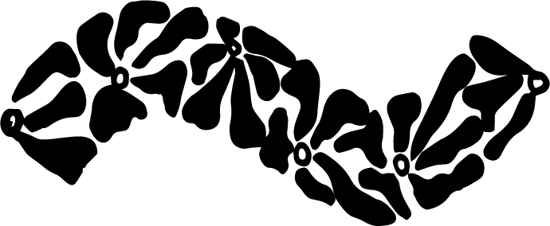
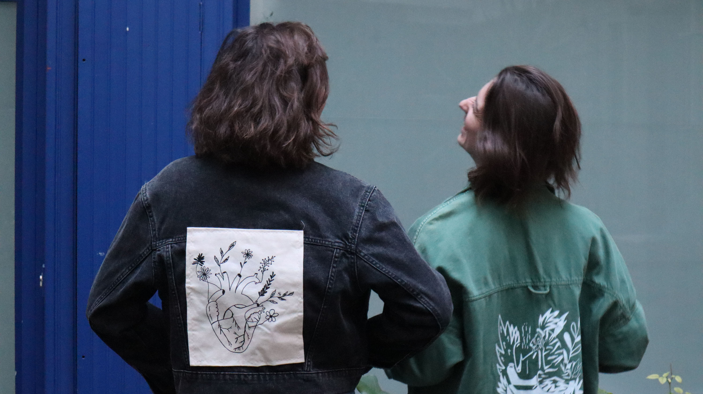
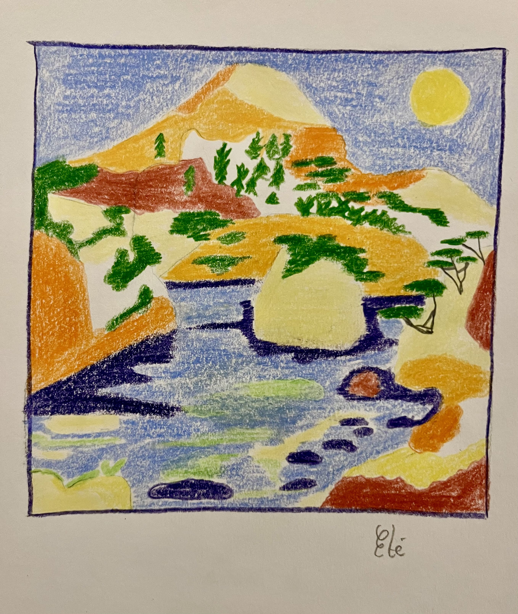
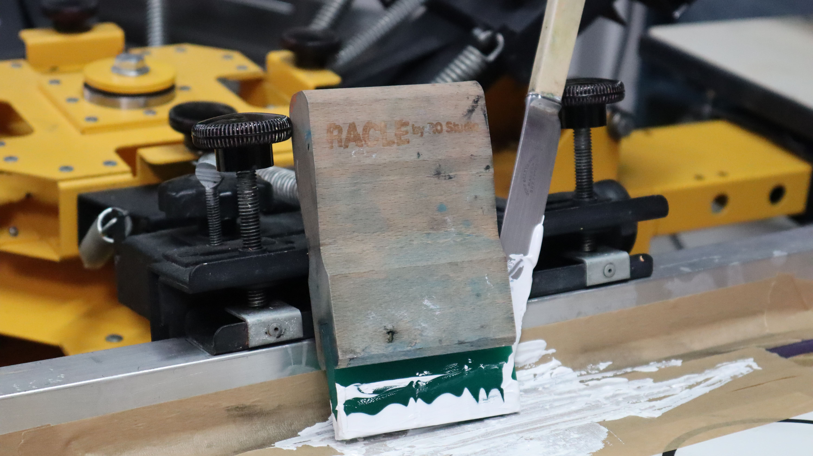
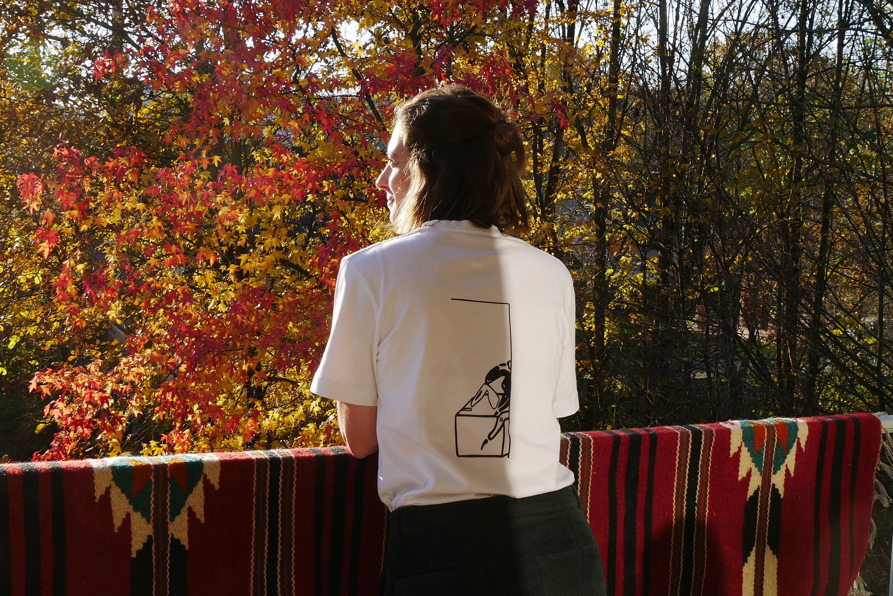

AccueilShopCollabGalerieQuand l'art et la mode s'entrechoquent.


Chaque illustration est d'abord pensée et dessinée sur feuille blanche au crayon.
Je suis illustratice basée à Marseille.

Chaque pièce est fabriquée dans un volume très réduit.
Je peux sérigraphier une veste de seconde main, coudre un patch cyanotype ou encore floquer un visuel sur un t-shirt en coton recyclé ou biologique.

L'objectif est de repenser sa façon de s'habiller.
Soit en donnant vie à une pièce via la création artistique, soit via des matières textiles durables.